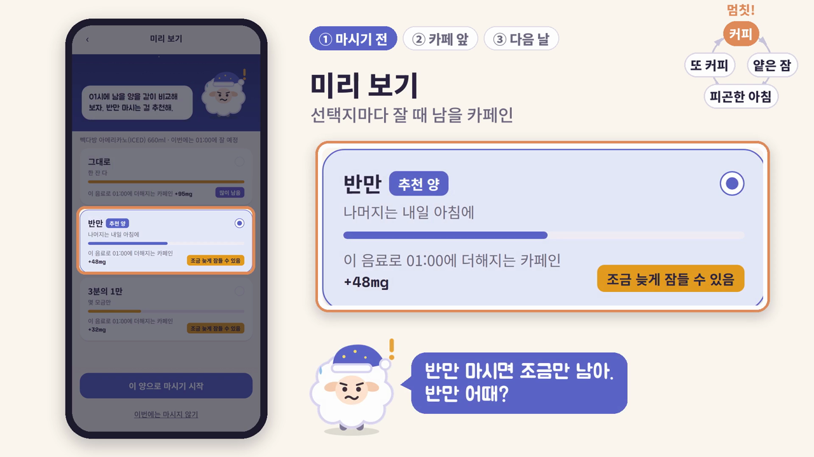
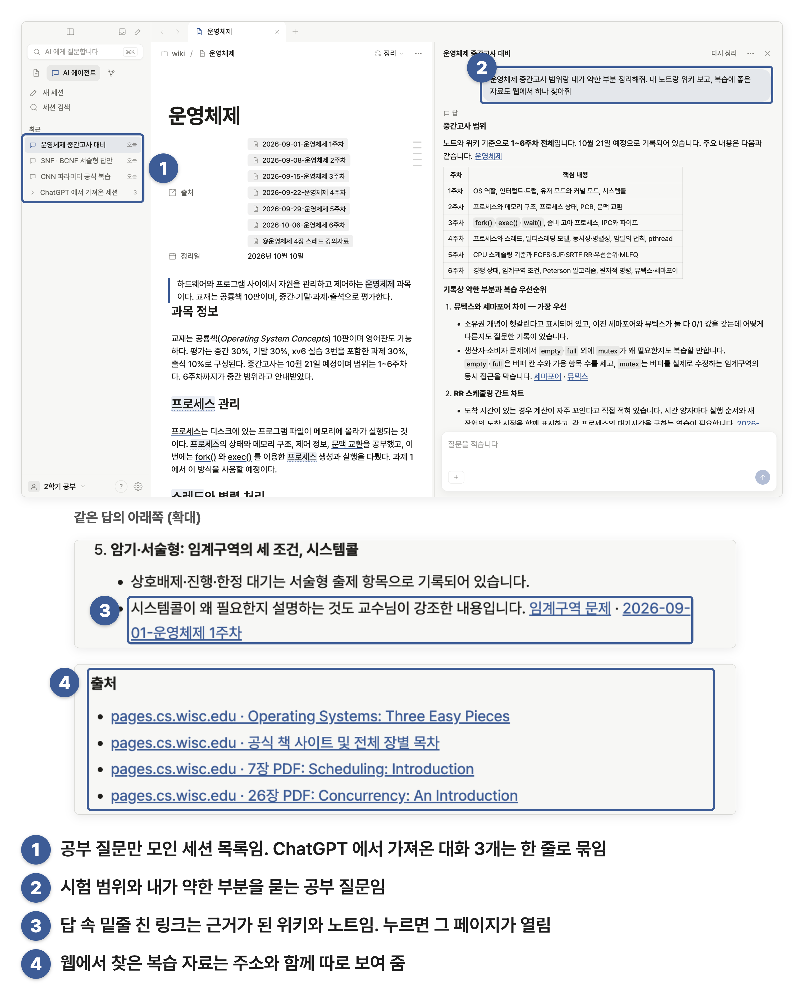
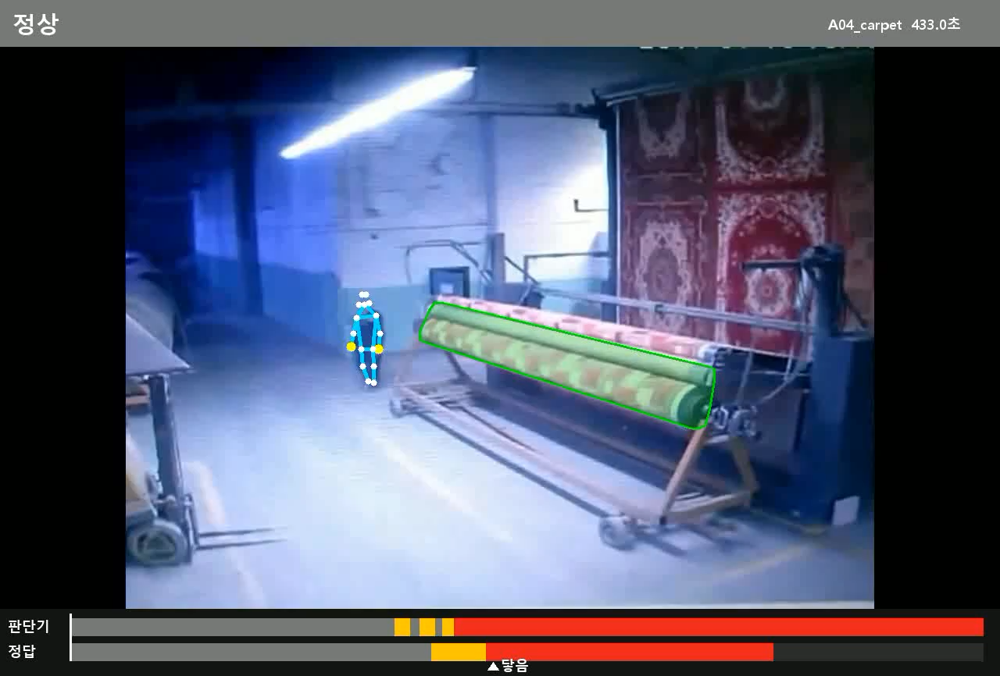

말똥 · Maldong
5인 팀장 · 공통 구조·통합·검증
마감 앞에서 마시는 커피가 잘 시각까지 얼마나 남는지와 덜 영향을 주는 선택지를 보여 주는 웹앱입니다.
SUMTECH 2026 최우수상 · 최종 2위
실제 사용자 테스트 전 · 카페 알림은 한 좌표 시연
한양대학교 ERICA 인공지능학과 · 융합보안 다중전공
2028.02 졸업 예정
AI로 제품을 만들고,
어떤 결과를 받아들일지 판단하는 기준을 세웁니다.

5인 팀장 · 공통 구조·통합·검증
마감 앞에서 마시는 커피가 잘 시각까지 얼마나 남는지와 덜 영향을 주는 선택지를 보여 주는 웹앱입니다.
SUMTECH 2026 최우수상 · 최종 2위
실제 사용자 테스트 전 · 카페 알림은 한 좌표 시연

자료 인입·위키 엔진 설계·개발·품질 측정
흩어진 자료와 AI 대화를 출처가 남는 로컬 Markdown 위키로 연결합니다. 제가 세운 좋은 위키의 기준으로 결과를 측정했습니다.
Electron · React · TypeScript
macOS·Windows 파일럿 · 최신 소스 비공개

PM · 판단 기준·실험 설계·모델 평가
산업안전 영상의 회전체 끼임 위험을 판정합니다. 사고 직전 정지와 평소 작업의 헛정지를 함께 평가하며 규칙과 학습 모델을 비교했습니다.
RTMPose · OpenCV · Python
영상 시연 · 실제 설비 미연동
구현에는 AI 에이전트를 적극 활용했습니다. 각 프로젝트에서 맡은 문제 정의·설계·평가·검토·통합 역할과 결과의 한계를 함께 기록합니다. 이미지는 실제 프로젝트 자료입니다.
설계와 검증에서 내린 판단
새로운 장면에 대응하려 학습을 시도했지만 적은 사고 데이터에서 과적합이 나타나 최종 구조에서 제외했습니다. RTMPose·포즈 품질 필터·규칙·정지 유지를 선택했습니다. 최종 정지 판정 8/10, 헛정지 5.7회/분, 평소 작업 정지 비율 64%로 목표를 모두 달성하지 못했습니다. 시험 재사용으로 얻은 학습 모델의 높은 점수를 일반화 성과로 제시하지 않았습니다.
각자 개발할 공통 뼈대·규약·에이전트 규칙을 먼저 배포했습니다. 서로 달라진 화면을 통일하고 규약에 반영했으며, 작성자보다 기획·문서와의 일치를 main 반영 기준으로 삼았습니다. AI가 구현을 빠르게 해도 사람의 검증은 필수라는 판단을 배웠습니다. 앱의 카페인 계산은 공식으로 처리합니다.
악성 AI 에이전트 스킬 탐지 과제입니다. 팀원이 구현한 탐지기의 테스트 39개와 평가를 재실행한 뒤 병합했습니다. 판정 실패가 안전으로 처리되는 점수 문제를 발견해 수정을 요청했습니다.
청년 전세대출 상품의 조건과 서류를 이해하고 추천·후속 질문으로 이어지는 흐름을 설계했습니다. 2026.10 사업단 단장상 수상. 공개 저장소는 mock 기본 백엔드 버전입니다.
논문을 카드뉴스로 만들고 생성된 수치를 원문과 대조하는 서비스를 개발했습니다. SNS 설문으로 사용자를 늘리려 했으나 충분한 피드백 없이 비용이 발생해 중지했습니다. 제품 개발과 사용자 반응 확보가 다르다는 점을 배웠습니다.